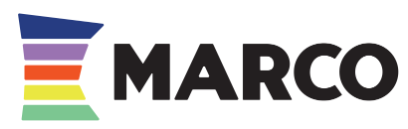

One place for Peer Reviewers to do the entire certification review — application, site visit, and panel — with the statute built in and a clean record at the end.
This demo doesn't include everything — but everything you do is possible to build in.
A quick note
You've often discussed improvements to your review process and documentation. Having had a "front-row seat" to the whole thing, I'm impressed with where you're at — you've done a magnificent job of simplifying the process.
While participating in the most recent review, I thought of some ways to make it even more friendly and comprehensive.
Right now, a Peer Reviewer evaluating an RCO is juggling a JotForm application, PDFs, separate forms for the site visit and the panel, and a conflict-of-interest step that lives somewhere else entirely. It works — but it's a lot of tabs, it's hard to keep a clean, auditable record, and it's a lot to juggle for a busy team at MARCO.
I built a working preview of something streamlined: a single reviewer console where the applicant's answers, the statute, the uploaded documents, and the scoring all sit on one screen — and the conflict-of-interest recusal is handled before anyone sees a thing. It ends with the close-out: stipend, mileage, and expenses, plus a compilation to use in the response to the applicant. And there's more — an admin side that simplifies what you do to complete the process.
I recognize there are parts of your process the reviewers (me!) never see, so this proposal is necessarily limited — but it's built end-to-end, plus anything else you're currently running through JotForm, Google, or other tools. I hope I've built enough to give you confidence that we can create one comprehensive system.
This proposal walks through what it does, how we'd build it for real, and a couple of ways to pay for it so you can pick what fits your budget.
— Kari Hoglund Kounkel, CARES Consulting Inc
Open the live demo ↗A side-by-side of where reviewers spend their effort now versus where the console puts it.
What a Peer Reviewer sees — already designed and demonstrated in the working preview you just walked through.
Reviewers attest before access. Anyone with a conflict is locked out of that applicant's materials automatically.
Pick a criterion and the applicant's answers, documents, and the verbatim Minnesota statute appear next to your scoring.
Every uploaded PDF opens right where it belongs — no hunting through Drive folders.
Written application review, site visit, and panel recommendation — the whole workflow in a single console.
As the panel converges, each reviewer can see how the others scored each criterion.
Every criterion shows the exact MN Statute 254B.05 language and the national standard, so judgments are grounded.
The panel review is a Zoom call — see what it looks like in the tool ↗
A separate workspace for MARCO, where the real time-savings live: managing reviewers, availability, assignments, applicants, and the close-out — without the email tangle.
Applications, vetting, interviews, and hiring for your peer reviewers — the whole pipeline in one place, not scattered across docs and inboxes.
When a review session comes up, the system asks reviewers for their availability — then MARCO assigns the cohort right on the same screen.
Today it's a tangle: emails about dates, then conflicts, then a separate note for each assignment. The system replaces all of it with one clear notice per reviewer.
Add applicants, run the completeness check, track every application's status, and export the final determination packet.
Compose the outcome letter to the organization, pulling in and editing the reviewers' comments — the whole decision in one place.
Stipends per session, mileage at $0.725/mile, and expenses total into one invoice automatically — no spreadsheet math, ready to pay through bill.com.
The Ask assistant (the one you see on this page) lives on the staff/admin side — quick answers right where your team works. Kept off the reviewer side, unless you'd like it elsewhere.
The reviewer console is one step of seven. Today this process runs on a stack of JotForms plus manual tracking. The full tool absorbs all of it into one system — so the JotForm subscription goes away.
The applicant completes the self-assessment, then the full application with ~22 document uploads.
Three outside references receive and complete a survey about the organization's community work.
MARCO staff confirm the application is complete and request anything missing — handled in the admin panel.
A 3–5 reviewer cohort is assigned; each signs the conflict-of-interest/release, and recused reviewers lose access automatically.
Each reviewer completes the written application feedback, the site visit review, and the panel feedback — the console you previewed.
MARCO composes the determination letter to the organization — pulling in and editing the reviewers' comments — then the outcome flows to the applicant and the state, with the record retained for three years.
Reviewers are paid a stipend per session, plus mileage at $0.725/mile and any expenses — totaled into one invoice automatically and tracked for MARCO's records.
A clear path with weekly check-ins, so there are no surprises. (A working preview already exists — you've just seen it.)
We settle on the package and scope together.
The balance is due at launch — not at "completion," because you'll have changes after you're live. Your first annual ($1,200) starts six months after launch — once the build is final, tested, and settled, you enter the service phase.
We map exactly what to build and which JotForms to link or replace — and whether payments should move to Stripe.
Weekly check-ins with your staff so you see progress and catch anything early. (This is the full build-out.)
You try the whole system with fake data in a safe copy before anything goes live.
Live within four weeks — your next certification cycle runs on it.
Monthly or on request until it's exactly what you want.
Its own module — add it on or fold it into the full build. Same idea: you run conferences through JotForm today, and one engine can run them end-to-end, from a single registration to the thank-you email.
Send one registration link, collect attendee details and payment together, and watch your roster fill in real time.
Print nametags, badges, and attendee materials straight from the registration data — no retyping, no mail-merge gymnastics.
As you build the agenda, collect each speaker's bio, headshot, session details, and AV needs in one place.
Send every attendee a digital “here's your conference info” recap — sessions, speaker bios, slides, and follow-up — automatically.
Looking at marcomn.org, a few quick wins would make the public side as smooth as the back office. A focused first round of these comes with the full build:
The menu repeats itself and nests a few layers deep (Programs › Programs › Summit). One clean menu makes everything easier to find.
Events are missing dates, times, and a clear "register here." A clean calendar — Recovery Day on the Hill, the 2026 Community Recovery Summit, and more — with real dates and signup built in.
A dedicated, step-by-step certification landing page — which pairs perfectly with the tool we're building.
Several heavy full-width images slow the site on mobile; optimizing them is a quick, noticeable win.